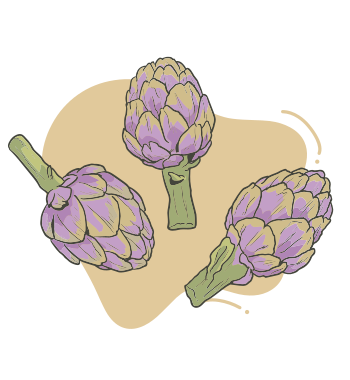

Os fitoterápicos listados na RENAME são:
• Cynara scolymus (alcachofra);
• Schinus terebinthifolia (aroeira);
• Aloe vera (babosa);
• Rhamnus purshiana (Frangula purshiana, cáscara-sagrada);
• Maytenus ilicifolia (Monteverdia ilicifolia, espinheira-santa);
• Harpagophytum procumbens (garra-do-diabo);
• Mikania glomerata (guaco);
• Mentha x piperita (hortelã-pimenta);
• Glycine max (isoflavona-de-soja);
• Plantago ovata (plantago, psyllium);
• Salix alba (salgueiro);
• Uncaria tomentosa (unha-de-gato).
